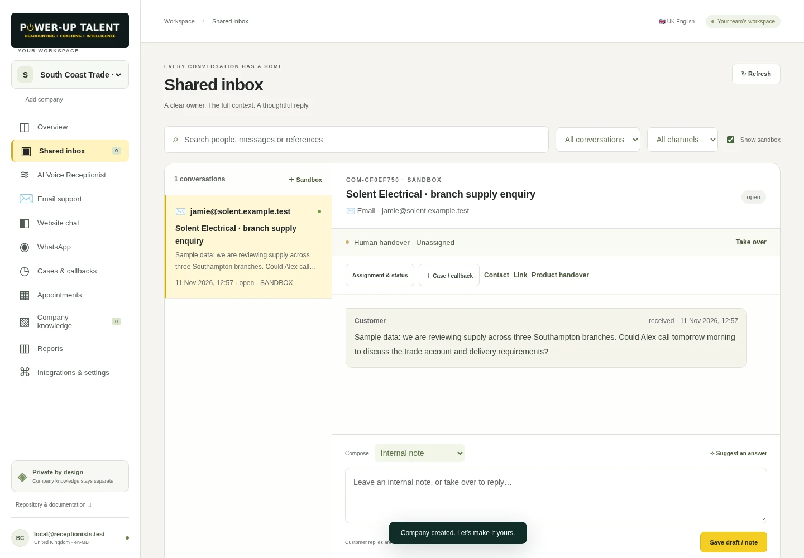

Shared inbox & human takeover
Conversation history, ownership, priority, status, internal notes and immediate human takeover.
POWER-UP TALENT | COMMUNICATIONS
Bring inbound calls, messages, cases and callbacks into one team workspace so staff can see what is overdue, who owns it and what happens next.
Team workspace ready to demonstrate · Live channels require a configured connection
GROUPED CAPABILITIES
Website chat, email, WhatsApp, voice telephony and calendar availability depend on a configured provider connection.
Conversation history, ownership, priority, status, internal notes and immediate human takeover.
Assign work, set due dates, record resolution and surface overdue cases, callbacks and unassigned conversations (excluding sandbox tests from live counts).
Approved FAQs, opening hours, services, policies and escalation guidance, plus reporting on response times and overdue work.
Inbound call handling, UK English voice settings, website chat, email support, WhatsApp and calendar booking — available when the corresponding provider connection is configured and verified.
PRACTICAL EXAMPLE & READINESS
A missed or unresolved customer enquiry surfaces on the Needs Attention view and is assigned to a named staff member for a scheduled callback.
See how Communications connects with the rest of the suite in our seven-step enquiry-to-delivery walkthrough ↗.
We can demonstrate the shared inbox, human takeover, cases, callbacks, approved company knowledge and Needs Attention view. Live telephony, website chat, email inbox sync, WhatsApp and calendar booking require a configured provider connection.
Per-customer live provider activation (telephony/SIP, Meta WhatsApp Cloud API, Google/Microsoft mailbox sync and calendar connectors).
Attachment storage, closed-window WhatsApp template management and autonomous background mail sync.
External proposals such as Dittofeed onboarding emails, Lago billing and automatic website-to-Sales attribution are treated as proposed until deployed and verified for a specific engagement.
INTERACTIVE PRODUCT DEMO · COMMUNICATIONS
Explore the sample-data demo for Communications below, or open the full interactive product demo ↗.
CRM · INTERACTIVE PRODUCT DEMO (SAMPLE DATA)
| Account / dossier | Next step & renewal check | Named owner | Status |
|---|---|---|---|
| Example Distribution Ltd | Renewing in 21 days · book review | Account team | Needs review |
| Sample Engineering Group | Stage gate: confirm decision-maker | Commercial team | In progress |
| Demo Construction Services | Log call notes & next follow-up | Account team | In progress |
| Example Trade Supplies | Quarterly review recorded | Commercial team | Complete |
Showing 4 of 4 sample items
COMMUNICATIONS · INTERACTIVE PRODUCT DEMO (SAMPLE DATA)
| Conversation / case | Next step | Owner | Status |
|---|---|---|---|
| Inbound call · callback requested | Assign owner & confirm callback time | Reception team | Needs review |
| Website chat · branch stock query | Send approved FAQ answer | Customer team | In progress |
| Shared inbox · account query | Human takeover & case due date | Customer team | In progress |
| Appointment request · sample | Confirmed via configured calendar | Reception team | Complete |
Showing 4 of 4 sample items
SALES & INTELLIGENCE · INTERACTIVE PRODUCT DEMO (SAMPLE DATA)
| Prospect / ICP fit | Action queue & quote status | Owner | Status |
|---|---|---|---|
| Example Manufacturing (Fit: High · Data: Missing phone) | Quote #Q-104 overdue · follow up | Sales team | Needs review |
| Sample Electrical Wholesale (Fit: High · Data: Verified) | Run approved task sequence step 2 | Sales team | In progress |
| Demo M&E Contractors (Fit: Medium · Campaign: Q4 Trade) | Review outreach preview for approval | Commercial team | In progress |
| Example Regional Projects (Won · Campaign: Q4 Trade) | Structured Sales handover exported | Sales team | Complete |
Showing 4 of 4 sample items
BUSINESS DELIVERY · INTERACTIVE PRODUCT DEMO (SAMPLE DATA)
| Customer / handover ref | Agreed scope & start date | Delivery owner | Status |
|---|---|---|---|
| HO-2026-041 · Example Regional Projects | Confirm won deal, scope & start date | Delivery lead | Needs review |
| HO-2026-039 · Sample Electrical Group | Branch onboarding · starts 18 Nov | Operations owner | In progress |
| HO-2026-036 · Demo Industrial Supplies | Initial setup scope · starts 25 Nov | Delivery lead | In progress |
| HO-2026-031 · Repeat import detected | Existing onboarding record preserved | Operations owner | Complete |
Showing 4 of 4 sample items
AUTOMATION · INTERACTIVE PRODUCT DEMO (SAMPLE DATA)
| Handover ref / route | Run outcome | Control mode | Status |
|---|---|---|---|
| Ref HO-2026-041 · Sales → Business Delivery | Ready for operator execution | Operator control | Needs review |
| Ref HO-2026-039 · Sales → Business Delivery | Onboarding created in Delivery | Operator control | In progress |
| Ref HO-2026-038 · Retry with same reference | Already existed · duplicate prevented | Operator control | In progress |
| Ref HO-2026-035 · Incomplete scope test | Rejected by Delivery validation | Operator control | Complete |
Showing 4 of 4 sample items
AI TEAM · INTERACTIVE PRODUCT DEMO (SAMPLE DATA)
| Assignment / teammate | Review status & evidence | Reviewer | Status |
|---|---|---|---|
| Delivery brief · Ref HO-2026-041 | Preview Sales handover & download instructions | Operations lead | Needs review |
| Account research · Chief of Staff | Inspect 3 cited source passages | Commercial director | In progress |
| Branch onboarding checklist draft | Revision requested on acceptance criteria | Branch manager | In progress |
| Sector briefing · version 2 | Accepted after human review | Commercial director | Complete |
Showing 4 of 4 sample items
MARKETING & SOCIAL MEDIA · INTERACTIVE PRODUCT DEMO (SAMPLE DATA)
| Source campaign | Funnel: Leads → Qualified → Attended → Won | Lead-to-win conversion | Status |
|---|---|---|---|
| Unattributed prospects (no campaign recorded) | 4 leads · 2 qualified · 1 attended · 0 won | Needs source review (0.0%) | Needs review |
| Q4 Electrical Wholesale Briefing | 8 leads · 5 qualified · 4 attended · 2 won | 25.0% (2 / 8 all leads) | In progress |
| Regional Branch Manager Roundtable | 6 leads · 4 qualified · 3 attended · 2 won | 33.3% (2 / 6 all leads) | In progress |
| Duplicate prospect ID check (browser import) | 0 duplicate IDs · file validated | Verified clean import | Complete |
Showing 4 of 4 sample items
Keep account history, follow-ups and renewals visible. Manage personal relationships in a separate workspace.
Qualify prospects, prioritise follow-ups and see which opportunities are moving.
REQUEST A WALKTHROUGH
Open our enquiry form with AI services: Communications already selected so you can tell us what you want to review or pilot.